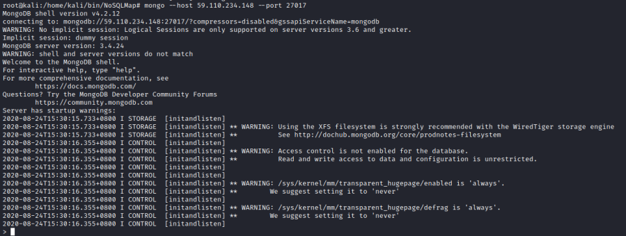
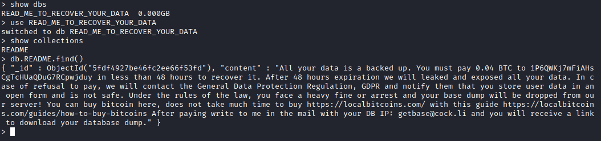

connect
mongo --host <IpHost> --port 27017

> show dbs #show databases
> use <database>
> show collections #show what is inside the database
Most of the mongoDB
database without authenticantion that we can find on shodan are been compromised like this one
above
Bibliography:
•
https://nakedsecurity.sophos.com/2017/01/11/thousands-of-mongodb-databases-compromised-and-held-to-ransom/